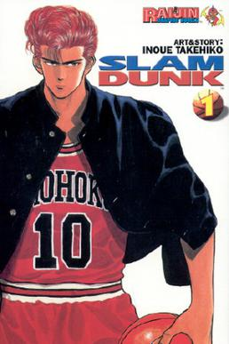

Written by: Takehiko Inoue
Slam Dunk (stylized in all caps) is a Japanese sports manga series written and illustrated by Takehiko Inoue. It was serialized in Shueisha's shōnen manga magazine Weekly Shōnen Jump from October 1990 to June 1996, with the chapters collected into 31 tankōbon volumes. It tells the story of a basketball team from Shōhoku High School in the Shōnan area of Japan.